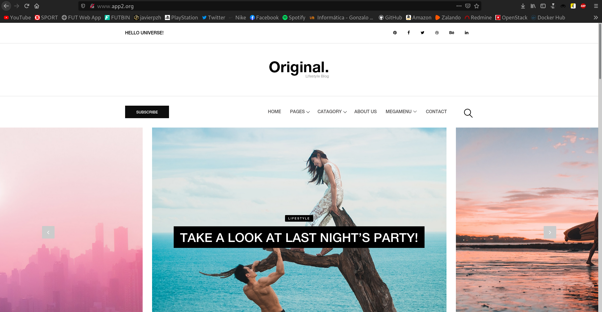
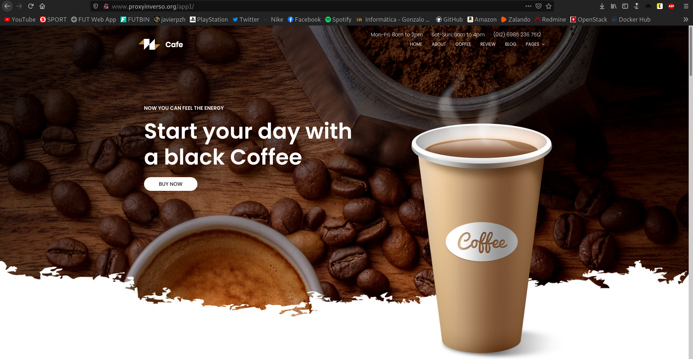
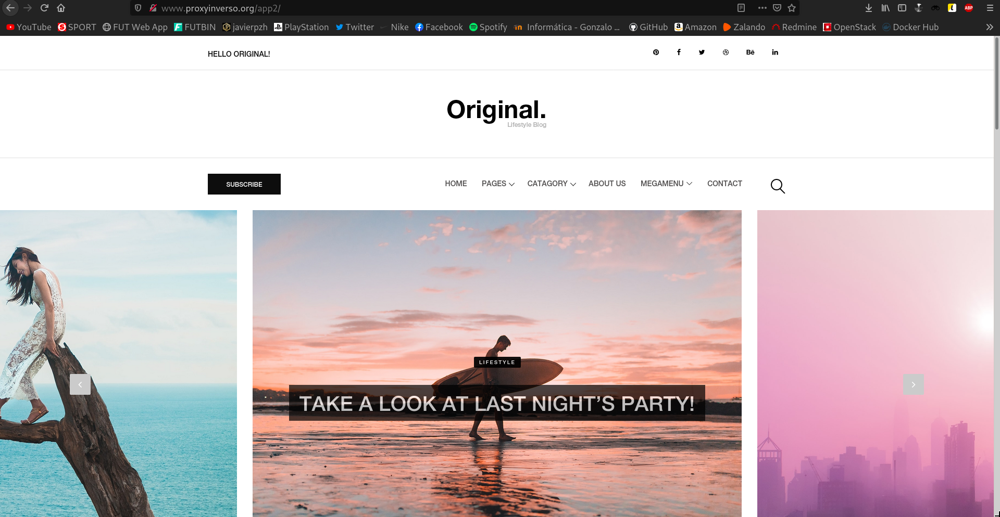

En este artículo vamos a instalar un proxy inverso con Apache.
El escenario en el que vamos a trabajar, está definido en este Vagrantfile.
Tendremos una máquina llamada balanceador que estará conectada a nuestra red doméstica, de manera que podremos acceder a ella, además de estar conectada a una red privada, a la que también pertenecerán dos máquinas, cada una con un servidor Apache y que servirán webs distintas.
La máquina balanceador actuará como proxy inverso y se encargará de redirigir las distintas peticiones, a las diferentes máquinas internas.
En mi caso, ambas páginas webs serán de prueba, y he utilizado dos plantillas cualquiera. Puedes descargar ambas desde los siguientes enlaces: Coffee-Master y Original-Master.
He descargado una plantilla en cada máquina interna, y he almacenado ambas carpetas resultantes en el directorio /var/www/html.
A continuación dejo el contenido de los ficheros de los diferentes virtualhosts:
Máquina apache1:
root@apache1:~# cat /etc/apache2/sites-available/000-default.conf
<\VirtualHost *:80\>
ServerAdmin webmaster@localhost
DocumentRoot /var/www/html/coffee-master/
ErrorLog ${APACHE_LOG_DIR}/error.log
CustomLog ${APACHE_LOG_DIR}/access.log combined
<\/VirtualHost\>
Atención: a esta configuración hay que eliminarle los carácteres \, que he tenido que introducir para escapar los carácteres siguientes, así que en caso de querer copiar la configuración, debemos tener en cuenta esto.
Máquina apache2:
root@apache2:~# cat /etc/apache2/sites-available/000-default.conf
<\VirtualHost *:80\>
ServerAdmin webmaster@localhost
DocumentRoot /var/www/html/original-master/
ErrorLog ${APACHE_LOG_DIR}/error.log
CustomLog ${APACHE_LOG_DIR}/access.log combined
<\/VirtualHost\>
Atención: a esta configuración hay que eliminarle los carácteres \, que he tenido que introducir para escapar los carácteres siguientes, así que en caso de querer copiar la configuración, debemos tener en cuenta esto.
Explicado esto, vamos a empezar con las configuraciones del propio post.
Pongámonos en situación, ahora mismo nos encontramos con las dos máquinas internas sirviendo cada una, una web diferente. Obviamente para acceder a ellas tenemos que utilizar la máquina balanceador, que es la que posee una dirección de mi red local.
Bien, ahora lo que vamos a hacer, es acceder a las webs mediante nuestro proxy inverso, a través de nombres de dominio. Para llevar a cabo esto, primeramente debemos habilitar el siguiente módulo de Apache:
a2enmod proxy proxy_http
Hecho esto, necesitaremos crear los distintos virtualhosts, que se almacenarán en la ruta /etc/apache2/sites-available/, y que en mi caso, se llamarán app1.conf y app2.conf.
Vamos a ver el contenido del fichero /etc/apache2/sites-available/app1.conf y luego explicaremos su funcionamiento:
<\VirtualHost *:80\>
ServerName www.app1.org
ServerAdmin webmaster@localhost
DocumentRoot /var/www/html
ErrorLog ${APACHE_LOG_DIR}/error.log
CustomLog ${APACHE_LOG_DIR}/access.log combined
ProxyPass "/" "http://10.10.10.11/"
ProxyPassReverse "/" "http://10.10.10.11/"
<\/VirtualHost\>
Atención: a esta configuración hay que eliminarle los carácteres \, que he tenido que introducir para escapar los carácteres siguientes, así que en caso de querer copiar la configuración, debemos tener en cuenta esto.
Podemos apreciar como este virtualhost actuará cuando se acceda a la web www.app1.org. Al acceder a esta web, lo que hará la máquina balanceador será redirigir la petición a la máquina cuya IP es 10.10.10.11, que es la primera de las máquinas de nuestra red interna.
Entendido el funcionamiento, vamos a ver el contenido del segundo fichero, el /etc/apache2/sites-available/app2.conf:
<\VirtualHost *:80\>
ServerName www.app2.org
ServerAdmin webmaster@localhost
DocumentRoot /var/www/html
ErrorLog ${APACHE_LOG_DIR}/error.log
CustomLog ${APACHE_LOG_DIR}/access.log combined
ProxyPass "/" "http://10.10.10.22/"
ProxyPassReverse "/" "http://10.10.10.22/"
<\/VirtualHost\>
Atención: a esta configuración hay que eliminarle los carácteres \, que he tenido que introducir para escapar los carácteres siguientes, así que en caso de querer copiar la configuración, debemos tener en cuenta esto.
De igual manera, podemos ver como este virtualhost actuará cuando se acceda a la web www.app2.org, y al acceder a ella, la máquina balanceador redirigirá la petición a la máquina cuya IP es 10.10.10.22, que es la segunda de las máquinas de nuestra red interna.
De esta manera, lo que estaremos haciendo será utilizando la máquina balanceador como proxy inverso para acceder a las distintas webs de nuestra red interna.
Vamos a comprobar que efectivamente el funcionamiento es el explicado, para ello antes, debemos habilitar los distintos ficheros de los virtualhosts:
a2ensite app1.conf a2ensite app2.conf
Reiniciamos el servidor web Apache:
systemctl restart apache2
Para poder acceder desde nuestro equipo, debemos añadir en nuestro fichero /etc/hosts, las siguientes líneas, haciendo referencia a la IP de nuestra red doméstica que posea la máquina balanceador:
192.168.0.74 www.app1.org 192.168.0.74 www.app2.org
Si accedemos desde nuestro navegador a la web www.app1.org:

Y si accedemos desde nuestro navegador a la web www.app2.org:

Podemos ver como efectivamente, el funcionamiento es el correcto y estamos accediendo a las distintas webs diferenciando mediante nombres de dominio.
Antes de finalizar el artículo, vamos a ver también como podemos configurar el proxy inverso para que, en vez de distinguir por nombre de dominio, lo haga por URL.
En este caso, únicamente poseeremos un nombre de dominio, y nuestro proxy inverso distinguirá mediante URLs, de manera que accederá a la primera web si la URL es www.proxyinverso.org/app1/, y accederá a la segunda web si la URL es www.proxyinverso.org/app2/.
Para hacer esto, vamos a crear un nuevo virtualhost, que de nuevo se almacenará en la ruta /etc/apache2/sites-available/, y que en mi caso, se llamará proxyinverso.conf, como el siguiente:
<\VirtualHost *:80\>
ServerName www.proxyinverso.org
ServerAdmin webmaster@localhost
DocumentRoot /var/www/html
ErrorLog ${APACHE_LOG_DIR}/error.log
CustomLog ${APACHE_LOG_DIR}/access.log combined
<\Location "/app1/"\>
ProxyPass "http://10.10.10.11/"
ProxyPassReverse "http://10.10.10.11/"
<\/Location\>
<\Location "/app2/"\>
ProxyPass "http://10.10.10.22/"
ProxyPassReverse "http://10.10.10.22/"
<\/Location\>
<\/VirtualHost\>
Atención: a esta configuración hay que eliminarle los carácteres \, que he tenido que introducir para escapar los carácteres siguientes, así que en caso de querer copiar la configuración, debemos tener en cuenta esto.
Una vez creado, vamos a comprobar que efectivamente el funcionamiento es el explicado, para ello antes, debemos habilitar el fichero del nuevo virtualhost:
a2ensite proxyinverso.conf
Reiniciamos el servidor web Apache:
systemctl restart apache2
Para poder acceder desde nuestro equipo, debemos añadir en nuestro fichero /etc/hosts, la siguiente línea, haciendo referencia a la IP de nuestra red doméstica que posea la máquina balanceador:
192.168.0.74 www.proxyinverso.org
Si accedemos desde nuestro navegador a la URL www.proxyinverso.org/app1/:

Y si accedemos desde nuestro navegador a la URL www.proxyinverso.org/app2/:

Podemos ver como efectivamente, el funcionamiento es el correcto y ahora estamos accediendo a las distintas webs diferenciando mediante las URLs.
Ya hemos visto todo lo relativo a esta entrada, por lo que este post finalizaría aquí.